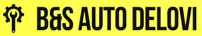

<mat-toolbar>
  <div class="logo-navbar" fxLayoutAlign="start center">
    <a routerLink="/"></a>
  </div>
  <!-- Zaglavni meni za pristup neophodnim komponentama -->
  <div fxFlex fxLayoutAlign="end center" fxLayoutGap="20px">
    <div fxFlex fxLayoutAlign="end center" fxLayoutGap="10px">
      <mat-icon class="ikonice-bar">shopping_cart</mat-icon>
      <a routerLink="/cart" routerLinkActive="active">Moja korpa
      </a>
      <a>|</a>
      <mat-icon class="ikonice-bar">local_shipping</mat-icon>
      <a routerLink="/orders" routerLinkActive="active">Moje porudžbine
      </a>
      <a>|</a>
      <mat-icon class="ikonice-bar">favorite</mat-icon>
      <a routerLink="/favourites" routerLinkActive="active">Omiljeno
      </a>
      <a>|</a>
      <a routerLink="/addProduct" routerLinkActive="active" (click)="loggedInCheck()">Postavi Proizvod</a>
    </div>
    <!-- Ispis imena i prezimena aktivnog korisnika -->
    <button *ngIf="!this.userService.isSignedIn"  mat-raised-button class="btn-blck" (click)="login()">
      Prijava
    </button>
    <button  *ngIf="this.userService.isSignedIn" mat-raised-button class="btn-blck" (click)="openProfile(this.userService.currentUser.id)">
      {{ this.userService.currentUser.name + ' ' + this.userService.currentUser.surname }}
    </button>
    <button *ngIf="this.userService.isSignedIn"  mat-raised-button class="odjava-red" (click)="signOut()">
      Odjava
    </button>
  </div>
</mat-toolbar>
